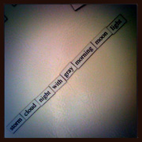
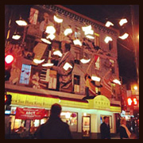

Blog
Stories

Check These Guys Out!
Geek Legacy
Geek Legacy started with a group of friends that spent almost every waking hour talking about video games, comics, movies, and television shows. Next, we created a weekly podcast program with topics such as time travel, super powers, urinal troughs, and zombies. Fast forward to 2011, and Geek Legacy was born. We started filming a documentary at San Diego Comic Con interviewing writers, actors, producers, merchants, and fans in costume about what it means to be a geek. Now we dedicate ourselves to bring you all the action, every day, all day, with geek news and reviews. Please join us in sharing the legacy.
StyleTechie
I love fashion and clothes. My hobby is probably shopping. But, I also love technology. I’m not a web developer and don’t know how to program. But, the changes and innovations in the tech field–and their effect on consumers and businesses–are fascinating to me. The consumerization of IT, big data analytics, the Cloud, how social and mobile are changing the way people work and conduct business–all these are or are becoming big trends. And in a year, the trends and innovations that have people buzzing right now may be completely different. The same could be said for fashion.
At Style Techie, I’ll share with you all my thoughts and opinions about the latest news, trends, and my random ramblings on style and technology.